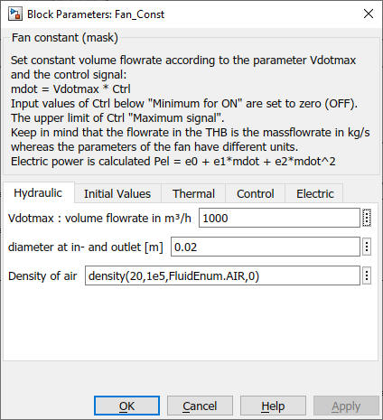
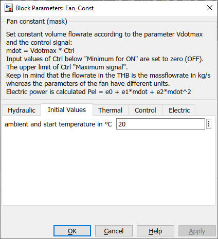
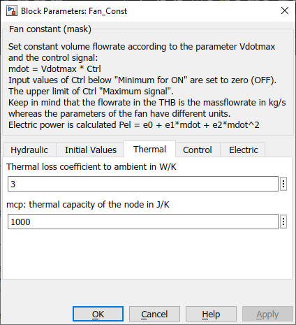
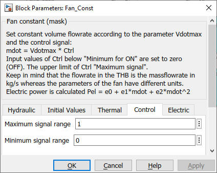
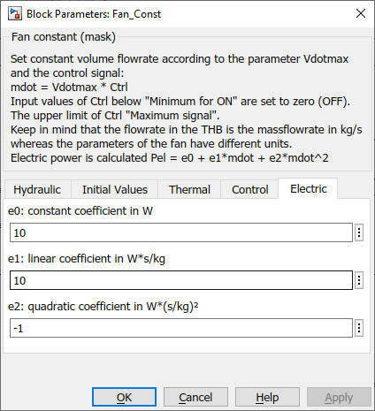

Fan_Const
Path: CARNOT/Hydraulics
Purpose:
Simple fan model for air ventilation systems with a pressure
independant flow rate.
Description:
The model is based on the Pump_Const
model but fan models have a major difference to the pump models: The
pressure and the fluid mixture coefficients, in case of air mainly the
humidity, are taken from the incomming THB. A transfer function is
used to avoid potential algebraic loops. The model has a thermal node
for thermal losses (and to break algebraic loops in the temperature
signal).
For the fan model the fluid type is fixed to Air.
The mass flow is set to the maximum mass flow rate specified in the
mask multiplied with the control signal.
Vdot = Vdotmax * Ctrl
Define a minimum and a maximum Ctrl signal for the operation range of the fan, e.g. 0.2 as minimum and 1 as maximum. The fan starts operation as soon as the Ctrl input is equal or above 0.2. If the Ctrl signal is above 1, the applied control signal is limited to 1. If a minimum of 0 is given, the fan start operation with any value above 0.
The flowrate in the THB is the massflowrate in kg/s whereas the parameters of the fan is in m3/h. The volume flow rate is converted to mass flow rate by multiplying the value with the air density at given pressure, ambient temperature and humidity (parameters in the mask).
mdot = Vdot/3600 * density(Tamb, air_pressure, FluidAir, absolute_humidity)
The electric power consumption of the pump is given by a quadradic polynom:
Pel = e0 + e1*mdot + e2*mdot2
For a ventilation model of a house use the blocks WDB2THB to access the conditions of the outdoor ambient air.
Input:
| THB_Air | : | Thermo-Hydraulic Bus of the incomming air |
| Ctrl | : | control signal |
Output:
| THB | : | Thermo-Hydraulic Bus of the leaving air |
| Pdat | : | Pdat bus containing operation informations of the fan |
Parameters and Dialog Box:





Examples:
Open the example explorer from the Matlab command window
ExampleBrowser
or load the examples via the CARNOT library.
Characteristics:
| Direct Feedthrough | : | No |
| Sample Time | : | Inherited from driving block |
| Vectorized | : | No |